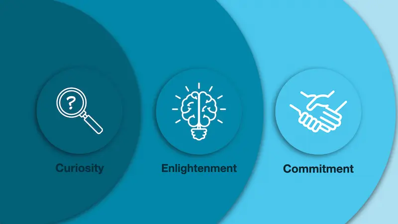

What Is a Marketing Campaign?
Part 1: Out Of Sight Should Not Be Out Of Mind
July 24, 2026
The Marketing Shift That Grows Your Business
Many of us recognize the fundamental truth that to grow a business, you must market it. Marketing is your engine of visibility, the tool that allows your mission to reach the people who need it most. When done well, marketing is a force for good. It builds connections, solves problems, and creates the revenue necessary to sustain your vision.
However, there is a shadow side to this growth. Too often, the pursuit of a larger market share comes at a direct cost to the planet.
For many entrepreneurs, the work they do is deeply personal. If you are lucky enough to own a business that facilitates impactful work, you know that your motivation extends far beyond the bottom line. You care about your community, your craft, and your legacy.
Yet, many businesses fall into the trap of operating in isolation from the natural world. We forget that every advertisement, every piece of packaging, and every digital campaign relies on the finite resources provided by nature.
The mistake is not in wanting to grow; the mistake is in forgetting that we are part of an ecosystem.
The sooner we begin to work in partnership with nature, the better off we will be. By learning to care for the very systems that sustain us, we can build businesses that are not just profitable, but regenerative.
When you shift toward eco-conscious practices, you are not only making your business more efficient; you are also gaining a massive competitive advantage. Modern consumers are looking for brands that internalize their pollution footprint and make intentional adjustments. Those who do will outperform the competition in both consumer trust and long-term profitability.
But before we can talk about how to make your marketing "green," we must first understand what a marketing campaign actually is. To change the impact of your marketing, you must first understand its scope.
The Customer Journey
Many people view a marketing campaign as a singular event: a social media post, a billboard, or a burst of advertisements. What many businesses don't think about is that your customers are on a journey, and a marketing campaign is a strategic guide designed to lead your customer through that buying journey.
Think of it like building a human relationship. If you were looking for a life partner, you wouldn't walk up to a stranger in a crowded room and immediately propose marriage. That approach is jarring, ineffective, and likely to turn people away. Marketing functions in much the same way. It is a process of gradual connection, moving a stranger from total unawareness to a place of deep trust and, eventually, commitment.

Phase 1: Curiosity: The Art of Attention
The first stage of the journey is curiosity. This th phase where you get attention in a world that is constantly trying to distract us. It is that moment when a person stops the scroll through their social media feed or is walking through a crowded event, and something causes them to pause and think, "Wait, what was that?"
The goal of the curiosity phase is to make someone interested enough to say, "Tell me more."
To achieve this, your messaging must tap into a fundamental human driver: survival. Whether it is the survival of their business, their health, or their lifestyle, people pay attention when they perceive something that could solve a critical problem or improve their state of being.
The collateral used in this stage is designed to be high-impact and introductory. It includes things like:
- Your logo and visual identity
- A compelling tagline or "one-liner"
- Social media content and advertisements
- The landing page of your website
- Lead magnets (such as free guides)
- Direct mail, business cards, or flyers
- Packaging and unboxing experiences
When these elements are aligned, they immediately ignite interest.
Phase 2: Enlightenment: Building the Foundation of Trust
Once you have captured their attention, you cannot simply jump to the sale. If you do, you bypass the most critical part of the relationship, which is enlightenment.
Enlightenment is the stage where curiosity turns into understanding. This is where the customer moves from "What is this?" to "How does this work, and why should I care?" They are looking for depth. They want to know the cost, the science, the benefits, and the potential side effects. They are making sure to do their due diligence before they make a purchase.
To facilitate enlightenment, you need "enlightenment collateral." These are deeper, more educational resources that allow you to demonstrate your value and authority. These are items like:
- Newsletters
- Nurture email sequences
- Case studies
- Testimonials
- In-depth website pages
- White papers
- Webinars
- Online courses
- Podcasts
- Video presentations
- Brochures
- Books
This phase is about providing the "why" and the substance that turns a casual observer into a potential client.
Phase 3: Commitment: The Decision to Act
The third and final phase is commitment. At this point, the customer is enlightened; they understand your value and they trust your expertise. However, they are often standing on the edge of a decision, wondering: "Is this the right move for me right now?"
The commitment phase is where you bridge the gap between interest and action. This is where you explicitly ask for the sale. It is not about being pushy; it is about providing the clarity needed to make a confident decision.
The messaging in this stage is remarkably simple. As a trained StoryBrand Certified Guide, we often use a specific formula to help businesses ask for the investment: "If you are struggling with [Problem X], buying [Solution Y] is the right decision."
The tools for this phase include things like:
- Pitch decks
- Sales presentations
- Formal proposals
- Pricing guides
- Direct sales emails
- Follow-up videos
When you provide affirmation with these tools, you give your customer the permission they need to move forward.
These three stages of the customer journey are based on proven principles from StoryBrand. They give you a clear path to attracting new customers so you can grow your bisiness. To get a step-by-step guide to building a successful marketing campaign, we recommend reading Donald Miller's book, Marketing Made Simple.
The Environmental Connection
By understanding these three stages—Curiosity, Enlightenment, and Commitment—you can see the the full scope of a marketing campaign. You can see the sheer volume of assets required to move a human being from a stranger to a loyal customer.
And here is the realization that brings us to the core of this series: every single one of these assets has a footprint. Whether it is the energy required to host a webinar, the physical waste of a printed brochure, or the carbon cost of shipping packaging, your marketing campaign is an active participant in the consumption of our planet's resources.
Now that we know what a campaign looks like, we can begin to ask the most important question: How is this impact affecting our world, and how can we do it better?